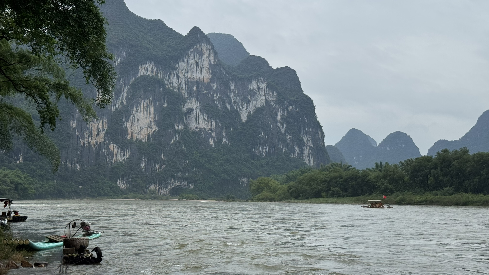

在路上记录真实，在代码里打磨细节。
这里既是旅行档案，也是我作为后端开发者的成长笔记。
这里既是旅行档案，也是我作为后端开发者的成长笔记。
JOURNEYS AND
CODE
关于这个博客
这个博客用来记录我的真实旅程：去过的城市、拍过的风景、当下的感受，以及每一次出发背后的原因。相比“打卡”，我更想留下长期可回看的个人档案。
我会把照片、路线和日志持续整理在这里，让每一段旅行都有可追溯的时间线，也方便未来做更完整的内容沉淀。
关于我
我是 Feign，主业是后端开发，日常关注系统稳定性、接口设计和工程效率。旅行是我从高强度开发节奏里抽离出来、重新观察世界的方式。
博客定位
这个站点把技术人视角和旅行记录放在同一个空间：上面是导航入口，下面是相册、日志和个人介绍，持续更新我的作品与脚步。